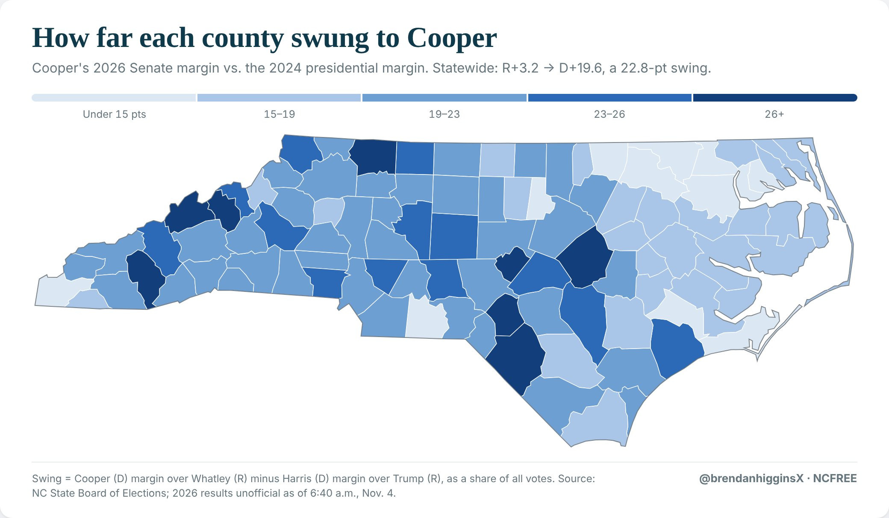
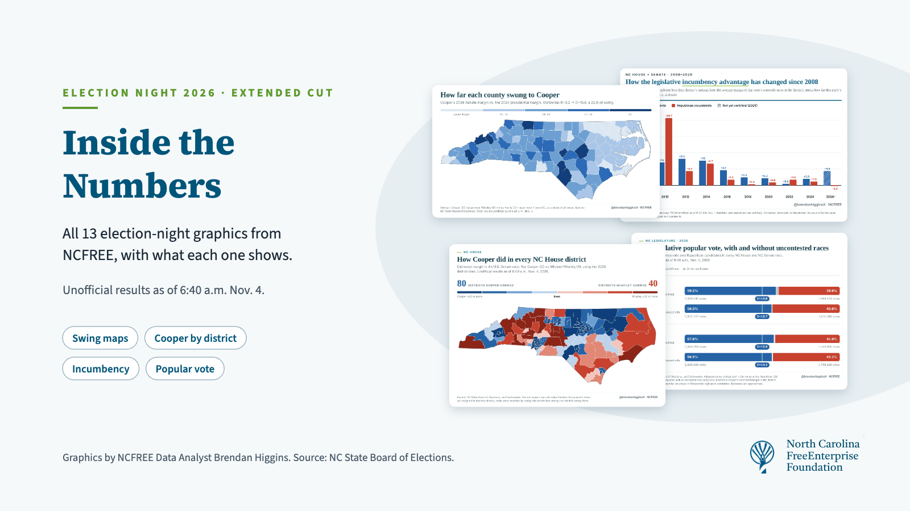
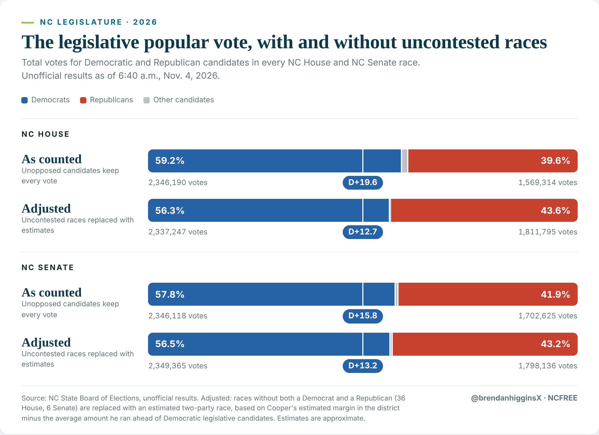
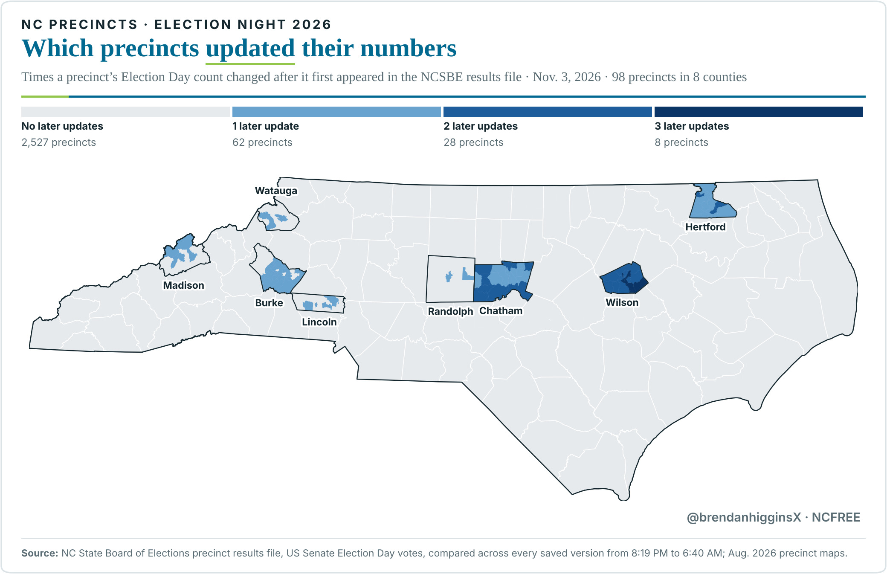

2026 US Elections Interactive Dashboard
Explore the 2026 U.S. Senate and Gubernatorial races across all 50 states. Select any state from the dropdown menu or click directly on the interactive map to view election details, candidates, and pictures.

North Carolina
Major focus of project; Roy Cooper won by 19.6 points in 2026, marking a 22.8-point swing from 2024.

2026 Election Graphics Gallery
Explore key election-night maps and data graphics from the 2026 elections in North Carolina:

Overview of all 13 election-night graphics analyzing the 2026 North Carolina election shift.
Every county shifted toward Democrats at the top of the ticket, led by mountain counties and suburban Raleigh.

Democratic candidates earned 59.2% of all votes cast across NC House races in 2026.

Comparing each district’s 2026 result with 2024; typical districts moved 16.3 points toward Democrats.

Historical tracking of party incumbent performance relative to open-seat nominees.

Locations of precincts that updated their Election Day totals after first reporting overnight.
Data Sources
- State Board of Elections (NCSBE): Official precinct-level election return files.
- North Carolina FreeEnterprise Foundation (NCFREE): Race calls, ratings, and district estimates.
- National Data: Compiled 2026 U.S. Senate Class 2 and Gubernatorial election projections.